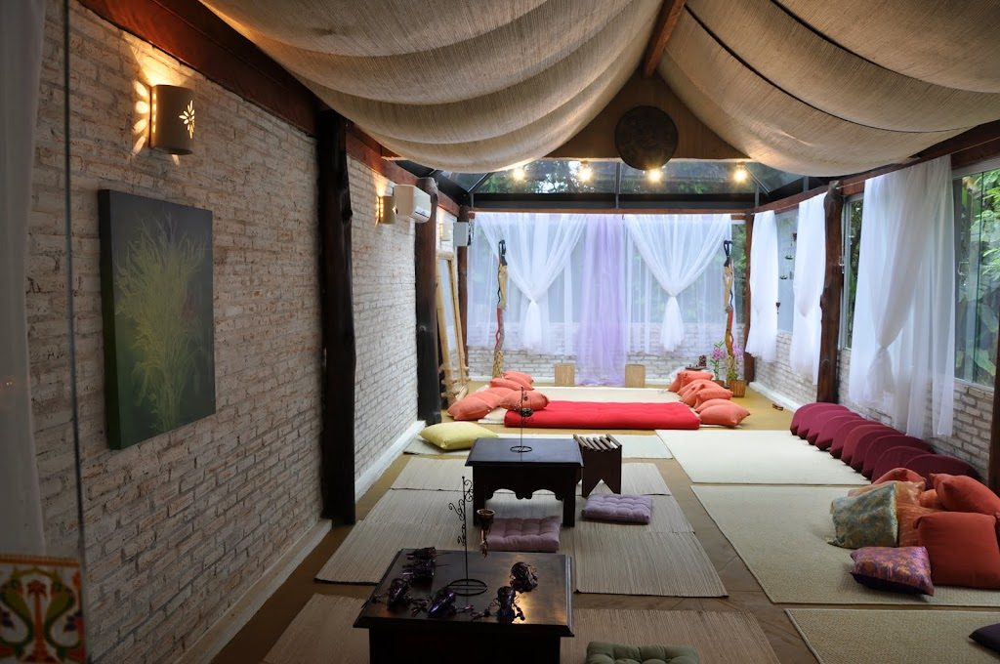
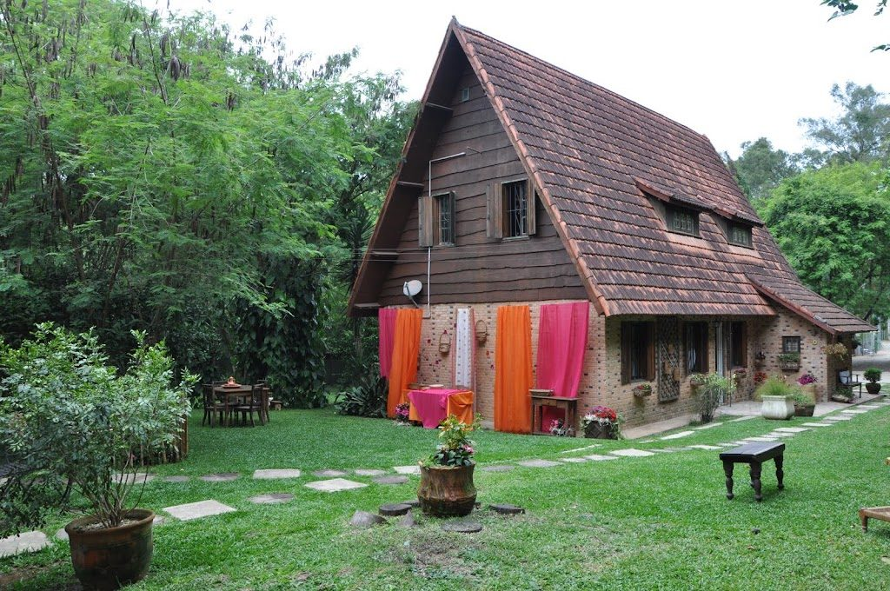

Profissionais com rotina de alta exigência
Para quem toma decisões ao longo de todo o dia e deseja uma prática discreta, em horário reservado logo cedo ou ao fim do dia, sem necessidade de preparação.
Yoga Terapia · Programa Morada · Online
Cada prática é elaborada a partir do corpo, da respiração e da rotina do aluno, com o acompanhamento de quem estuda e ensina Yoga há 30 anos. As sessões são online, de onde você estiver.
Conversar pelo WhatsApp Conhecer o programa
A conversa inicial é gratuita. O Programa Morada tem no máximo 10 vagas.
Para quem toma decisões ao longo de todo o dia e deseja uma prática discreta, em horário reservado logo cedo ou ao fim do dia, sem necessidade de preparação.
Para quem dedica a maior parte do tempo aos outros e encontra pouco tempo para si. A prática reserva esse tempo, com o acompanhamento constante da mesma professora.
A prática é adaptada às condições de cada corpo e realizada em casa, com o auxílio de cadeira e apoios, respeitando o ritmo do aluno e as regiões que pedem mais atenção.
Sessões por vídeo, em português, em horário ajustado ao seu fuso.
Na tradição de Sri Krishnamacharya, o Yoga se adapta à pessoa, e não a pessoa ao Yoga. Por isso não há aula pronta. A prática é elaborada de acordo com as necessidades de cada aluno.
A Yoga terapia é uma prática complementar e não promete cura.
Gratuita. Um primeiro contato para compreender o que você busca e avaliar se o programa é adequado.
R$490. Uma avaliação detalhada do corpo, da respiração e da rotina, que resulta no plano da sua prática.
Duas sessões individuais por semana, online, com acompanhamento contínuo.


Há 30 anos dedicada ao estudo e ao ensino do Yoga.
O Yoga só existe na presença do aluno junto ao professor.
Programa Morada
Duas sessões individuais por semana, online, com acompanhamento contínuo. Máximo de 10 vagas.
Conversar pelo WhatsAppR$ 3.000/mês
Conversa inicial
Primeiro contato, para compreender o que você busca.
Gratuita
Sessão de mapeamento
Primeira sessão completa, com a elaboração do plano de prática.
R$ 490
Sessão avulsa
Sessão individual online, sem compromisso mensal.
R$ 420
Pagamento por Pix, cartão ou assinatura mensal.
Sim. Todas as sessões acontecem por vídeo, de onde você estiver, no Brasil ou no exterior.
Não. A prática é planejada a partir das condições atuais do seu corpo e da sua rotina.
Não. A Yoga terapia é uma prática complementar e não promete cura. Ela não substitui o acompanhamento de profissionais de saúde.
Pix, cartão ou assinatura mensal. A conversa inicial é gratuita. A sessão de mapeamento custa R$490 e a sessão avulsa, R$420.
Sim. Os horários são combinados individualmente, logo cedo ou ao fim do dia. O Programa Morada tem no máximo 10 vagas.
No trabalho de Christiane, o Yoga também se expressa no gesto, na dança e na criação coletiva.
A conversa inicial é gratuita e sem compromisso.